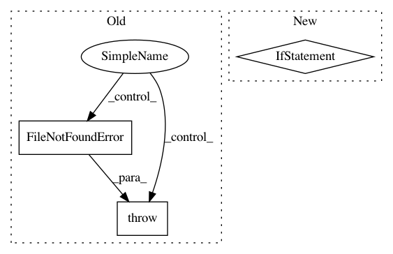

be8e63d4774207a94fa7d26f9f9e1f7f55f9e664,python/ray/tune/suggest/suggestion.py,Searcher,restore_from_dir,#Searcher#Any#,207
Before Change
if os.path.exists(checkpoint_path):
self.restore(checkpoint_path)
else:
raise FileNotFoundError(
"{filename} not found in {directory}. Unable to restore "
"searcher state from directory.".format(
filename=Searcher.CKPT_FILE, directory=checkpoint_dir))
@property
def metric(self):
The training result objective value attribute.
After Change
pattern = self.CKPT_FILE_TMPL.format("*")
full_paths = glob.glob(os.path.join(checkpoint_dir, pattern))
if not full_paths:
raise RuntimeError(
"Searcher unable to find checkpoint in {}".format(
checkpoint_dir)) // TODO
most_recent_checkpoint = max(full_paths)
self.restore(most_recent_checkpoint)
@property
In pattern: SUPERPATTERN
Frequency: 3
Non-data size: 3
Instances
Project Name: ray-project/ray
Commit Name: be8e63d4774207a94fa7d26f9f9e1f7f55f9e664
Time: 2020-08-10
Author: rliaw@berkeley.edu
File Name: python/ray/tune/suggest/suggestion.py
Class Name: Searcher
Method Name: restore_from_dir
Project Name: tensorflow/models
Commit Name: 43587c64f9e25467c17394504a327d90e05b865c
Time: 2020-06-16
Author: hongkuny@google.com
File Name: official/nlp/tasks/sentence_prediction.py
Class Name: SentencePredictionTask
Method Name: initialize
Project Name: ilastik/ilastik
Commit Name: 02480197d8b24414166eb23b573d7e5ac9e49a7a
Time: 2019-08-01
Author: tomaz.vieira@embl.de
File Name: ilastik/applets/dataSelection/opDataSelection.py
Class Name: DatasetInfo
Method Name: expand_path